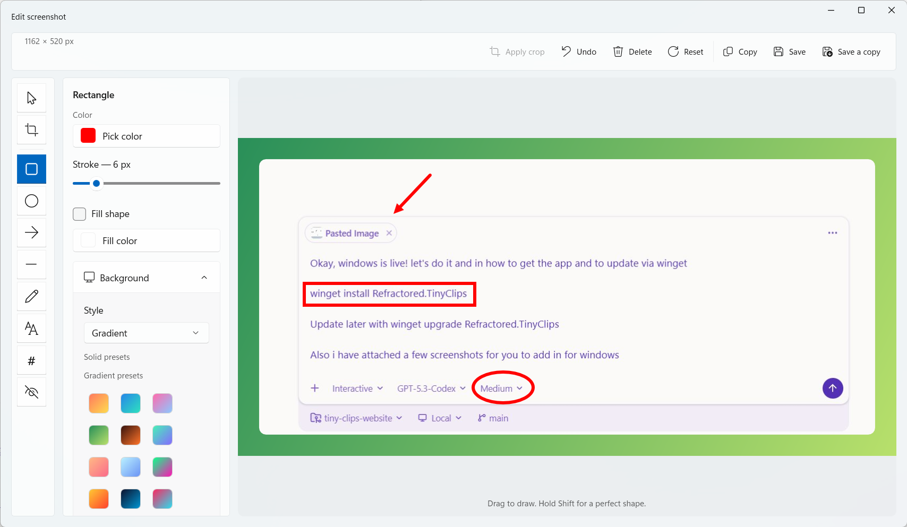
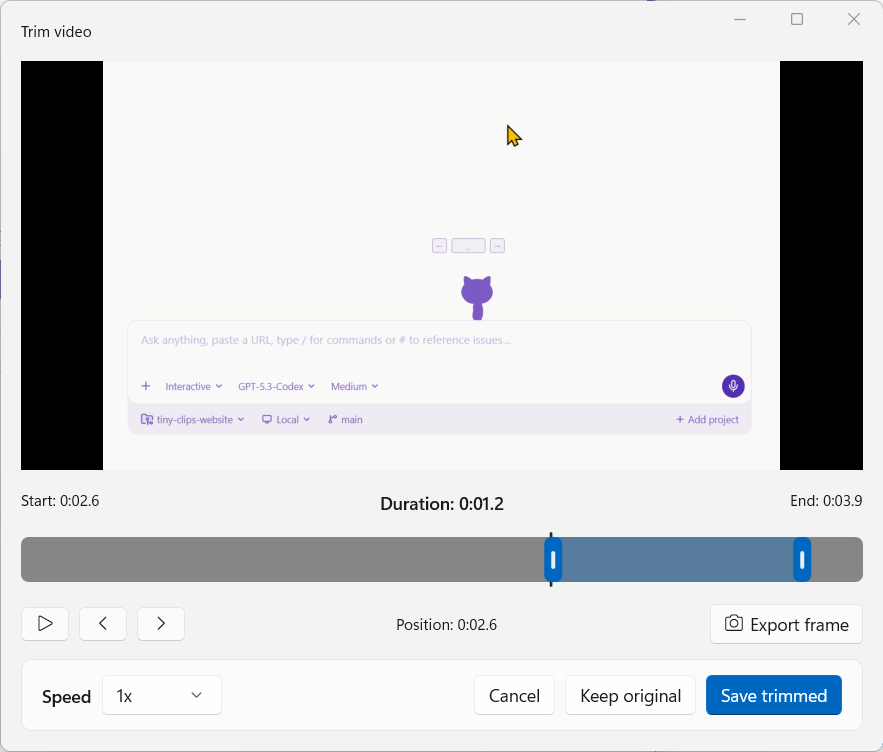

Tiny Clips documentation
Capture, polish, and share from your menu bar or system tray, on Windows and macOS.
Top features

Screenshot editor Annotate, redact, crop, add a background, and export to a set frame.
Video and GIF recording Record with audio, a webcam overlay, and a teleprompter, then trim the result. Clips Library
Search, organize, reopen, and share everything you've captured.
Studio (Preview)
Keep screen and camera as separate layers, then add zooms, cuts, annotations, and captions.
Scrolling capture and OCR
Stitch a long page into one image, or copy text straight off the screen.
Agent Control
Let your own AI agent use Tiny Clips, with the permissions you choose. Off by default.
Clips Library
Search, organize, reopen, and share everything you've captured.
Studio (Preview)
Keep screen and camera as separate layers, then add zooms, cuts, annotations, and captions.
Scrolling capture and OCR
Stitch a long page into one image, or copy text straight off the screen.
Agent Control
Let your own AI agent use Tiny Clips, with the permissions you choose. Off by default.
New to Tiny Clips?
Start with Capture basics. It covers the capture picker, shortcuts, and where your files go. If something isn't working, see Permissions and troubleshooting.
Don't have the app yet? Download Tiny Clips for free, or try it in your browser first.